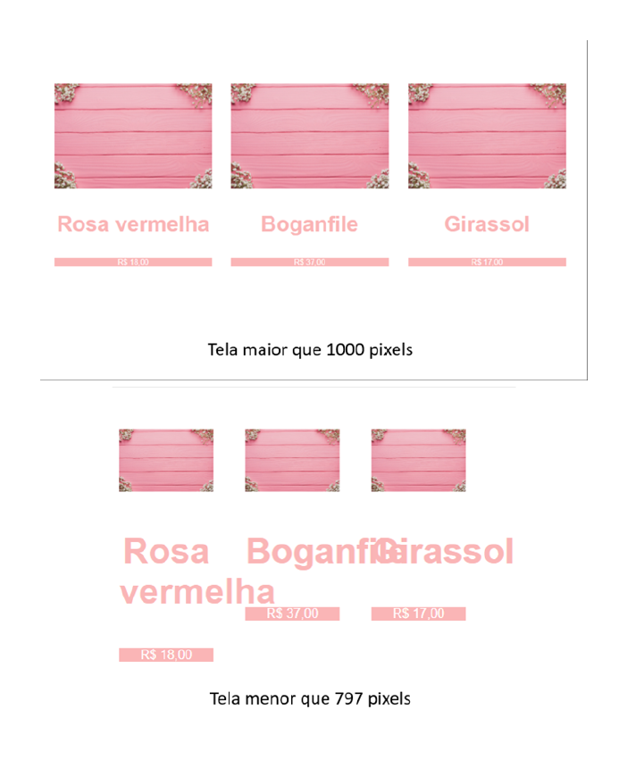
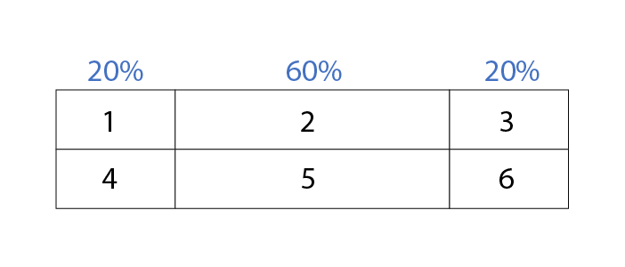
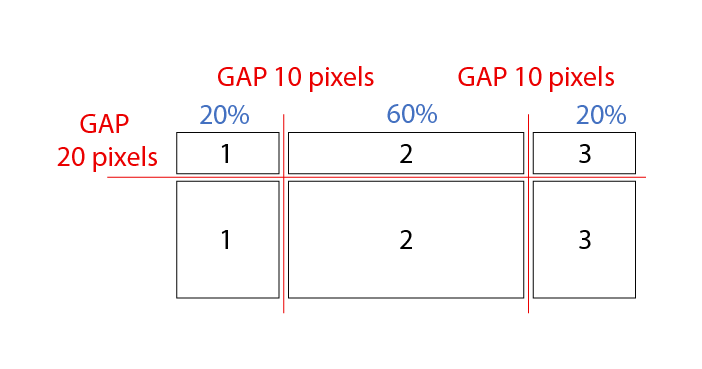
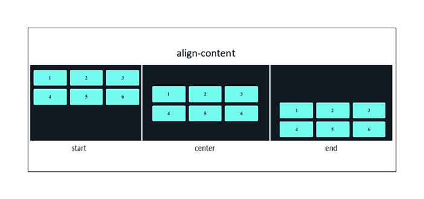
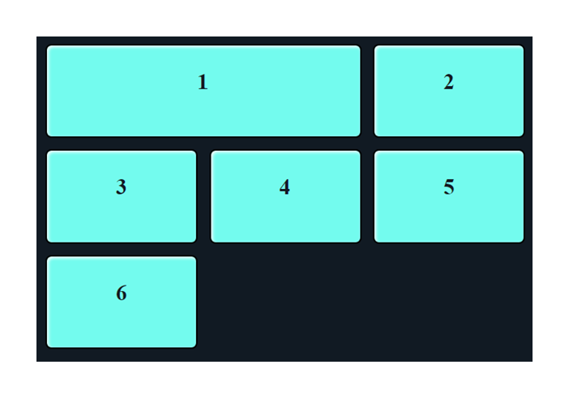
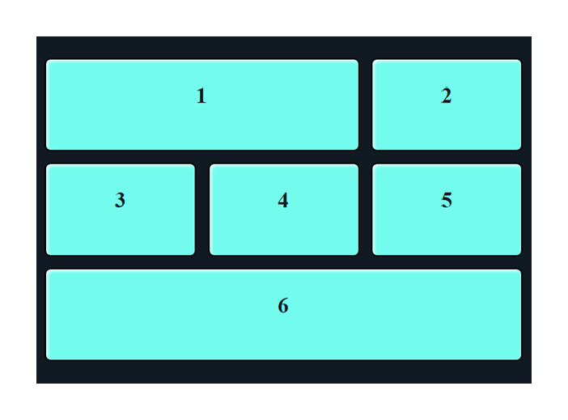
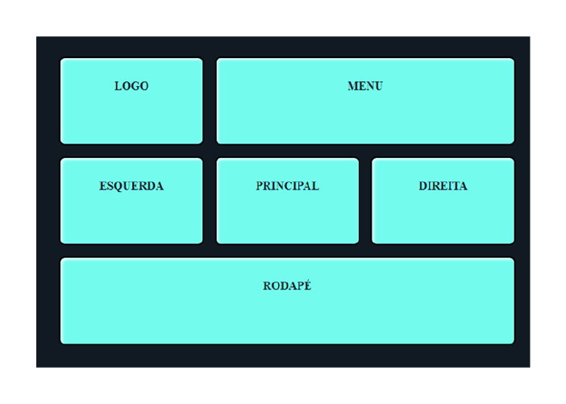
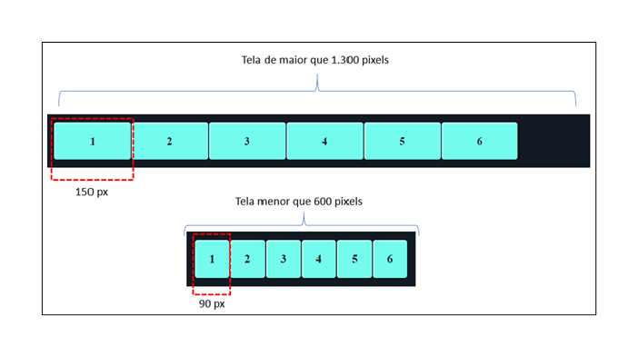

Neste conhecimento, você aprenderá conceitos avançados de CSS3, como seletores complexos, pseudoclasses, pseudoelementos, criação de background com cores gradientes, transitions, transform, animation, media queries, display grid e Flexbox e unidades de medidas absolutas e relativas, e também entenderá mais detalhes sobre retrocompatibilidade e os prefixos utilizados no CSS para garantir a compatibilidade com a maioria dos navegadores atuais.
Todos esses recursos auxiliam na criação de interfaces mais dinâmicas e responsivas, proporcionando uma usabilidade mais interessante, além de recursos modernos, para o usuário final.
Um seletor CSS basicamente é a forma de chamar, selecionar, uma tag específica do HTML e, assim, conseguir aplicar algum estilo personalizado neste elemento.
Você já deve ter aprendido em outro conhecimento os seletores simples, que são, porém, essenciais para a utilização do CSS e, na maioria dos casos, supre a necessidade de estilização. Já os seletores complexos em CSS são expressões que permitem selecionar elementos de uma página da web com base em uma combinação de condições mais elaborada do que simplesmente selecionar elementos por tipo, classe ou ID.
Entenda agora alguns símbolos que tornam a seleção de elementos mais específica e consequentemente mais complexa.
Seguindo a hierarquia dos elementos HTML, é possível dizer que no código a seguir as tags div e p são filhas da section, pois as duas estão dentro dela.
<section>
<div>
<h2>Camiseta Azul</h2>
<p>Essa é a descrição da camiseta azul...</p>
</div>
<p>Aqui está um parágrafo com uma breve descrição...</p>
</section>
Repare que dentro da div há uma outra tag p, além da tag p que está após o fechamento da div.
Caso se utilize o seletor básico de hierarquia do CSS, para estilizar a tag p, ao colocar o código section p{color: orange; }, este código aplicará o estilo tanto no p que está dentro da div quanto no p que é “filho” direto da tag section.
Seleção pela tag
Fonte: Senac EAD (2024)
A figura mostra que todos os conteúdos da tag “p” serão estilizados.
Uma tag é conceituada como “filha direta” de outra quando não há outra tag envolvendo ela. Repare, no exemplo do HTML anterior, que o primeiro p está dentro de uma tag div. Neste caso, a tag div é filha direta de section, mas o primeiro p, fazendo uma analogia com a hierarquia familiar, é como se fosse o “neto” de section. Para selecionar um filho direto com CSS, descartando os elementos iguais que não são filhos diretos, usa-se o seletor “maior que” (>). Veja um exemplo:
section > p {color: orange;}
Utilizar o > nesse exemplo indica um aviso de que o CSS deve selecionar apenas as tags p, que são filhas diretas de section. Então, se você considerar o código HTML mostrado anteriormente, esse seletor só aplicaria o estilo no segundo p.
Para selecionar elementos irmãos, ou seja, que estejam em um mesmo nível de hierarquia, há alguns símbolos disponíveis no CSS que auxiliam nesta tarefa.
O seletor + consegue selecionar um seletor irmão, porém somente se o elemento chamado vier logo após o elemento de referência. Confira este código HTML:
<div class="alerta">
<p>Texto um</p>
</div>
<p>Texto dois</p>
<p>Texto três</p>
A partir da classe alerta, é possível pedir para estilizar o segundo parágrafo, utilizando o seguinte código:
.alerta + p { border: solid 1px #000; }
Esse código não vai aplicar o estilo na classe alerta nem no p filho de alerta, e sim apenas no primeiro irmão p.

Irmão adjacente
Fonte: Senac EAD (2024)
A figura mostra três textos, mas apenas a tag logo ao lado da seleção ficou com a borda.
Repare que, apesar de existirem duas tags p logo após a classe alerta, o seletor + seleciona apenas o primeiro elemento irmão. Outro detalhe é que o seletor + só funciona se o elemento inserido vier exatamente logo após o primeiro elemento, isso quer dizer que o código a seguir não funcionaria:
<div class="alerta">
<p>Texto um</p>
</div>
<h2>Teste de seletor</h2>
<p>Texto dois</p>
<p>Texto três</p>
Usando o mesmo exemplo (.alerta + p { border: solid 1px #000; }), não seria aplicado nenhum estilo, pois agora há a tag h2 entre .alerta e a tag p.
O seletor ~ também serve para selecionar elementos irmãos, porém, diferentemente do seletor +, que seleciona apenas um elemento e precisa estar logo ao lado do seletor de referência, o ~ seleciona todos os elementos irmãos do primeiro elemento. Por exemplo:
.alerta ~ p{border: solid 1px}
Esse código estilizará todas as tags p que vierem após a classe alerta, mesmo que haja outras tags entre elas.
É possível também selecionar qualquer tag HTML usando o seu atributo. É importante lembrar que atributo de tag são aquelas informações adicionais que são colocadas nas tags para estender suas funcionalidades.
Há algumas tags que têm atributos obrigatórios, como a tag IMG. Para realmente mostrar a imagem, é preciso usar o atributo SRC, assim como a tag a, que, para informar o link, é preciso usar o atributo HREF.
Os seletores de atributo do CSS permitem a utilização de qualquer atributo, porém, é mais comum sua utilização com campos de formulário. Confira exemplos:
As pseudoclasses também fazem parte dos seletores complexos do CSS, porém, com elas é possível selecionar elementos com base em seu estado ou sua posição. Um exemplo de pseudoclasse mais tradicional é o hover, com o qual o estilo só é aplicado ao elemento selecionado quando o ponteiro do mouse, em computadores, estiver em cima do elemento. Por exemplo:
a:hover{ color: #f60; }
Esse código fará com que a cor do texto do elemento a mude ao colocar o mouse sobre ele.
Note que, antes do nome da pseudoclasse, sempre são colocados os dois-pontos (:) e ela deve vir junto ao elemento ao qual você deseja vinculá-la, ou seja, não pode haver espaços em branco entre o elemento e a pseudoclasse. A pseudoclasse hover é a mais popular, porém há diversas outras que podem ser extremamente úteis na hora de criar interfaces complexas nos seus projetos.
A pseudoclasse checked é ativada quando um campo está marcado. Para utilizá-la, é preciso usar os elementos input do tipo checkbox ou radio. Veja o HTML a seguir:
<form method="post">
<label class="title">O que você gosta mais?
<input id="css" type="radio" name="linguagem" value="css">
<label for="css">CSS</label>
<input id="html" type="radio" name="linguagem" value="html">
<label for="html">HTML</label>
</form>
Agora será utilizada a pseudoclasse junto aos seletores complexos para estilizar a label sempre que um elemento estiver marcado, ou seja, sempre que um elemento estiver checked. Exemplo:
input:checked + label{ background: #f60; color: #fff;}
Isso fará com que o navegador sempre aplique a formatação na tag label, que vem como irmã de um input:checked.
No CSS, também existem pseudoclasses para que sejam selecionados elementos com base em sua posição dentro de outros elementos pais. Para os próximos exemplos, será considerado o seguinte código HTML:
<ul class="lista">
<li>Primeiro elemento</li>
<li>Segundo elemento</li>
<li>Terceiro elemento</li>
<li>Quarto elemento</li>
<li>Quinto elemento</li>
<li>Sexto elemento</li>
</ul>
first-child: seleciona apenas o primeiro elemento.
Por ex.: .lista li:first-child{ color: #f60}
last-child: seleciona o último elemento.
Por ex.: .lista li:last-child{ color: #f60}
nth-child: com a pseudoclasse nth-child, é possível informar a posição do elemento que se quer selecionar:
Por ex.: .lista li:nth-child(3){color: #f60}
Nesse exemplo foi colocado o número 3 dentro dos parênteses, então será selecionada a terceira tag. Veja o resultado:
Seleção pelo elemento filho
Fonte: Senac EAD (2024)
A figura mostra que apenas o terceiro elemento filho ficou estilizado.
Mas com o nth-child, existem mais possibilidades, como usar os valores odd e even. Exemplo:
.lista li:nth-child(odd){color: #f60}
Com o valor odd, selecionam-se todos os elementos ímpares. Já com o valor even, selecionam-se os elementos pares.
Como você deve ter percebido, há muitas pseudoclasses disponíveis que oferecem flexibilidade e controle ao estilizar elementos com base em diferentes contextos e estados. Além disso, aliadas aos demais seletores do CSS, essas pseudoclasses desempenham um papel fundamental na aplicação de estilos dinâmicos e interativos em elementos HTML, pois permitem selecionar e estilizar elementos com base em estados específicos ou interações do usuário.
Os pseudoelementos do CSS permitem estilizar e selecionar partes específicas de uma tag, indo além da seleção do próprio elemento. Eles são indicados pelo uso de dois-pontos duplos (::) seguidos por um identificador que representa a parte específica do elemento que você deseja estilizar.
Alguns pseudoelementos funcionam como se criassem uma nova tag dentro do elemento selecionado. Além disso, apesar de serem parecidos com as pseudoclasses, nestas, a seleção é feita com base em uma característica de uma tag ou ação realizada pelos usuários, enquanto nos pseudoelementos a seleção é realizada em partes específicas de um elemento, permitindo estilizar essas partes independentemente. Conheça alguns pseudoelementos a seguir:
É utilizado para estilizar a primeira linha de um parágrafo. Por exemplo:
p::first-line { color: #f60; }
Nesse exemplo, o pseudoelemento mudará a cor somente da primeira linha de qualquer tag p. Obviamente ele funcionará melhor se os estilos aplicados se relacionarem à fonte ou considerarem displays inline.
É utilizado para aplicar um estilo diferente na primeira letra de um texto. Por exemplo:
p::first-letter { font-size: 24px }
Nesse exemplo, o pseudoelemento mudará o tamanho da fonte apenas da primeira letra do parágrafo para 24px.
Esse pseudoelemento adiciona um conteúdo dentro de seu elemento pai, porém antes do conteúdo escrito. Exemplo:
h1::before {content: “Bem vindo”;}
Nesse exemplo, o before inserirá o texto “Bem vindo” antes do texto que estiver no HTML da tag h1.
É possível usar vários estilos dentro do before, porém só funcionarão se o estilo content for colocado dentro dele, mesmo que o valor de content esteja vazio.
O pseudoelemento after é muito similar ao before, porém adiciona um conteúdo após o texto do elemento pai. Exemplo:
h1::after {content: “...”;}
Esse exemplo incluirá três pontos após o texto do h1.
Tanto o after quanto o before são bastante utilizados em CSS para aplicar estilos complexos, como adicionar máscaras e filtros dentro de outros elementos, pois eles se comportam como se fosse outra tag dentro de uma tag pai. Então, é possível aplicar vários estilos avançados de CSS neles.
Esse pseudoelemento é utilizado basicamente para aplicar um estilo diferente ao selecionar um texto na tela. Essa seleção refere-se à ação de clicar com o botão do mouse em caso de PCs, e segurar puxando o texto que deseja selecionar ou dar dois toques na palavra em caso de dispositivos móveis. Exemplo:
p::selection{ color: #f00 }
No selection, entretanto, podem-se aplicar apenas as seguintes propriedades: color, background, cursor e outline.
Esse pseudoelemento serve basicamente para selecionar os ícones das listas (ul ou ol). Geralmente é utilizado para deixar a fonte com uma cor diferente. Exemplo:
li::marker { color: #f00;}
Esse exemplo deixará o ícone de qualquer li na cor vermelha.
Repare que alguns pseudoelementos são bem específicos e consequentemente pouco utilizados, como é o caso do selection e do marker. Porém, há elementos, como after e before, que são fundamentais para a estilização de interfaces mais complexas, pois possibilitam desenvolver um estilo mais avançado sem a necessidade de modificar o HTML da página.
Nesta seção, você aprenderá alguns estilos avançados disponíveis no CSS3, que auxiliam no desenvolvimento de interfaces dinâmicas e atrativas e de usabilidades mais otimizadas para o usuário final.
Em CSS, todos os estilos que começam com a palavra background têm a ver com o plano de fundo de algum elemento. Assim, é possível inserir cores e até mesmo imagens por meio das propriedades background-color e background-image. Porém, a propriedade background-color permite utilizar apenas cores sólidas nos elementos, ou seja, uma única cor por elemento.
Entretanto, com o passar dos anos, tornou-se um conceito de design moderno a utilização de cores gradientes, ou “degradê”. Gradiente é um efeito visual que cria uma transição suave entre duas ou mais cores em uma superfície. Essa técnica é frequentemente usada em design gráfico, web design e outras disciplinas de design para criar efeitos visuais atraentes e transições suaves de cor.
A ideia por trás de uma cor gradiente é que as cores mudam gradualmente de uma para outra, criando uma transição fluida ao longo de uma direção específica. Pode haver gradientes horizontais, verticais, diagonais ou radiais, dependendo do efeito desejado.
No CSS, existem funções para que se consiga aplicar esses efeitos de cores gradiente no fundo dos elementos. Essas funções são utilizadas no estilo background-image ou em sua forma compacta, escrevendo apenas a palavra background como propriedade. Conheça a seguir os dois tipos de gradiente:
Em um gradiente linear, as cores mudam ao longo de uma linha reta, podendo ser horizontal, vertical ou em qualquer ângulo desejado. Exemplo:
background: linear-gradient(to right, #ffe74c 0%, #ff920a 100%);
Nesse exemplo, foi criado um gradiente horizontal, de uma cor amarela até um tom de laranja.
A função linear-gradient tem diversos valores a serem preenchidos. Primeiro, é preciso indicar a direção das cores que formarão o efeito de gradiente, podendo usar os seguintes valores:
Assim, pode-se orientar qualquer direção com a combinação destes comandos:
Com esses dois exemplos, você cria qualquer efeito gradiente horizontal ou vertical. Para inverter a ordem, basta inverter a ordem das cores.
Porém, usando a mesma lógica, consegue-se criar orientações diferentes para o gradiente, como na diagonal, por exemplo, criando combinações de direção. Analise este código:
linear-gradient(to bottom right, #499bea, #7b20e3);
Repare que foram utilizadas após o to as direções bottom e right, o que indica que o background começa de cima para baixo e da esquerda para a direita, formando assim uma linha de transição diagonal. Veja um exemplo:

Gradiente linear diagonal
Fonte: Senac EAD (2024)
Quadro demonstrando a transição suave, na diagonal, entre as cores azul e roxo.
Contudo, para aplicar efeitos de gradiente linear em direções diferentes, é válido você usar, ao invés do comando to junto às direções, a direção com os graus em sentido horário. Então, você pode passar um valor de 0 a 360 seguidos da unidade de medida deg. Confira um exemplo:
background: linear-gradient(135deg, #499bea, #7b20e3);
Então, usando o comando to ou informando os valores com deg, é possível orientar qualquer direção para o efeito de gradiente. Porém, nos exemplos citados, foi utilizada somente a transição entre duas cores, mas a função linear-gradient permite inserir uma quantidade ilimitada de cores. Para isso, basta inserir as novas cores na função, sempre separando-as com vírgula. Analise este código:
background: linear-gradient(to right, #499bea, #4be8c9, #7b20e3);
Esse exemplo criará um gradiente horizontal entre as três cores. Confira o resultado dessa transição na figura.
Gradiente linear com três cores
Fonte: Senac EAD (2024)
Quadro demonstrando a transição suave, na horizontal, entre as cores azul, verde e roxo.
Todos os exemplos que vimos até agora são da função linear-gradient, mas existe outra função para criar efeitos de gradiente em forma de círculo.
Em um gradiente radial, as cores mudam a partir de um ponto central em direção às bordas. Isso cria um efeito de radiação de cores.
As funcionalidades do gradiente radial são muito parecidas com as do linear gradiente, porém a direção sempre parte do meio dos elementos e segue em formato circular. Considere o seguinte código:
background: radial-gradient( circle, #499bea , #7b20e3);
Repare que, nessa função, foi utilizado o comando circle ao invés da direção. Esse comando fará com que o gradiente forme um círculo perfeito na transição entre as cores.
Gradiente radial com o comando circle
Fonte: Senac EAD (2024)
Quadro demonstrando a transição suave usando o radial-gradient.
Repare na figura anterior que o gradiente forma um círculo perfeito, mesmo que sua transição de cores acabe cortando o plano de fundo do elemento. Neste caso, para formar o círculo, acabou cortando um pouco a transição na altura.
Com o radial gradiente, é possível formar uma elipse ao invés de um círculo e, para isso, basta não informar o comando circle dentro da função.
Por se tratar de comandos inteiramente visuais, você só conseguirá ter certeza do resultado final depois de visualizar o background no navegador. Aconselha-se a utilização de ferramentas geradoras de gradiente. Basta uma rápida pesquisa por “gradiente generator” em qualquer buscador da web que você encontrará diversas ferramentas gratuitas com esse fim.
Por fim, os gradientes são amplamente utilizados para criar fundos de páginas, botões, barras de navegação e outros elementos de design. Eles proporcionam uma maneira visualmente atraente de adicionar profundidade e interesse aos elementos de uma interface ou layout. Além disso, a capacidade de criar gradientes com CSS facilita a implementação desses efeitos em qualquer site ou sistema web.
A propriedade transform serve para inserir uma função de transformação em um elemento HTML. Com essa propriedade, você pode aplicar modificações como girar, mover, inclinar e mudar o tamanho do elemento. Essas transformações podem ocorrer no formato 2D e, em alguns casos, em formato 3D.
A sintaxe para utilizar os estilos de transformação consiste em aplicar a propriedade transform no elemento selecionado seguido de um valor, que sempre é uma ou várias funções. Veja as funções disponíveis para se usar na propriedade transform no formato de duas dimensões.
O método translate move, desloca, o elemento de acordo com os valores inseridos no eixo X (horizontal) e no eixo Y (vertical). Exemplos:
transform: translate(50px, 20px);: deslocará o elemento 50 pixels para a direita de sua posição original e 20 pixels para baixo.
Agora, para deslocar o elemento para a esquerda ou para cima, utilizam-se os valores negativos em pixels.
transform: translate(-20px, -30px);: o elemento será deslocado 20 pixels à esquerda de sua posição original e 30 pixels acima.
Então, usando valores negativos e positivos, é possível controlar quando e para qual direção o elemento será movido.
Existem duas funções derivadas da translate, a translateX e translateY. É intuitivo perceber que a translateX cuidará somente do movimento horizontal e a translateY do deslocamento vertical. Exemplos:
transform: translateX(100px);: deslocará o elemento 20 pixels à direita.
transform: translateY(50px);: deslocará o elemento 50 pixels para baixo.
As funções translateX e translateY também aceitam valores negativos. A utilização delas só é indicada quando você necessita deslocar o elemento apenas em um eixo (vertical ou horizontal). Portanto, se sua necessidade é deslocar o elemento nos dois eixos, o mais indicado é usar a função translate original.
A função rotate serve para girar em elemento. Para que ela funcione, basta indicar o valor de ângulo a ser rotacionado, que vai de 0 a 360 graus, representado pela sigla deg. Exemplo:
transform: rotate(180deg);: este valor girará o elemento a 180 graus de sua posição original.
A função scale aumenta a escala, ou seja, o tamanho de um elemento HTML. Os valores X e Y controlam a escala na altura e largura respectivamente. Funciona da seguinte forma: todo elemento começa da escala 1, ou seja, o número 1 é o tamanho original do elemento; se for colocado o número 2, ele vai aumentar em 2 vezes o seu tamanho. Confira o exemplo:
transform: scale(3, 3);: com esses valores, considerando que o elemento selecionado tenha 100 pixels de largura e altura, o elemento ficará com um tamanho total de 300 por 300 pixels.
Para aumentar valores menores que o dobro, utilize o número em formato decimal, separado por ponto. Para aumentar metade do tamanho do elemento, utilize o valor 1.5. Observe:
transform: scale(1.5, 1.3);: neste exemplo, o elemento aumentará metade do seu tamanho original na largura e 30% do seu tamanho original na altura.
Porém, também é possível reduzir o tamanho de qualquer elemento com a função scale. Para isso, lembre-se de que a função considera que o número 1 é o valor original do elemento, então, se você colocar o valor 1 na função scale, o elemento não mudará de tamanho. Seguindo essa lógica, para reduzir o tamanho do elemento selecionado, basta inserir o valor 0 (zero) seguido de uma casa decimal, por exemplo, 0.5 reduzirá o tamanho do elemento pela metade. Mas, se você colocar o valor zero, o elemento desaparecerá, por isso, controla-se sua escala de redução com os números decimais. Confira os exemplos:
transform: scale(0.3, 0.3);: fará o elemento ficar com apenas 30% do seu tamanho original.
transform: scale(0.5, 0.5);: fará o elemento reduzir 50% do seu tamanho.
transform: scale(0, 0);: fará o elemento desaparecer.
Existe uma forma compacta de os valores serem inseridos na função scale. Se tanto o valor de X quanto o de Y forem o mesmo, é possível inserir apenas um número. Veja os exemplos:
transform: scale(2);: fará o elemento dobrar de tamanho na altura e largura.
transform: scale(0.5);: fará o elemento reduzir 50% do seu tamanho original, tanto na altura quanto na largura.
É mais comum, no dia a dia, usar o scale com apenas um número, pois isso fará o elemento aumentar ou diminuir mantendo suas proporções de altura e largura. Geralmente só se usa a sintaxe com dois números, caso precise mudar o tamanho em proporções diferentes.
No entanto, assim como a função translate, a função scale tem duas variações mais simples, que controlam separadamente os eixos X e Y. São a scaleX e a scaleY. Veja um exemplo de utilização dessas funções:
transform: scaleX(1.5);: fará o elemento aumentar 50% do seu tamanho na largura.
transform: scaleY(2);: fará o elemento dobrar de tamanho na altura.
Todas as particularidades mostradas na função scale original funcionam nas funções scaleX e scaleY, como reduzir e controlar a escala com números decimais.
O método skew distorce, inclina, um elemento ao longo dos eixos X e Y por meio dos valores fornecidos. Para isso, nas posições X e Y, inserem-se os valores a serem inclinados com o deg. Por exemplo:
transform: skew(20deg, 30deg);
Esse comando fará o elemento inclinar e distorcer 20 graus no eixo X e 30 no eixo Y.
É comum a utilização da função skew com apenas um valor. Quando isso ocorre, é aplicado apenas o valor do eixo X e o navegador entende que o eixo Y será igual a zero, o que mantém o elemento em seu estado original, fazendo a inclinação apenas no eixo X. Observe:
transform: skew(20deg);
Esse comando fará o elemento inclinar 20 graus no eixo X. A distorção no eixo Y não será aplicada. Veja a figura:
Exemplo da função skew com apenas um valor declarado
Fonte: Adaptado de IconArchive (2024)
Ilustração de um alienígena da cor roxa em posição original e, ao lado, a mesma imagem inclinada através da função skew, aplicada somente no eixo X.
Como os valores de skew são aplicados por meio da unidade deg, ou seja, em graus, os números irão de 0 a 360 deg. Mas é possível indicar esses valores no formato negativo, utilizando o hífen (-), o que, neste caso, inverterá a posição da inclinação.
A função skew também tem suas variações individuais: skewX e skewY, que obviamente, controlam individualmente seus eixos.
Uma forma eficaz de aplicar mais de uma transformação em um elemento é usar a propriedade transform e declarar as funções separadas por espaço em branco. Veja o exemplo:
transform: scale(0.5) skew(0, 30deg) translate(50px, 100px);
Nesse exemplo, o elemento aplicará todas as transformações declaradas.
As transições no CSS são uma técnica que permite criar efeitos suaves de animação durante as mudanças de estado de um elemento. Elas permitem que você especifique como as propriedades CSS devem se transformar de um estado para outro ao longo do tempo, proporcionando uma transição visualmente agradável entre esses estados.
A propriedade principal usada para definir transições em CSS é a transition. A propriedade transition aceita quatro valores principais:
Indica qual propriedade CSS será afetada pela transição.
Especifica o tempo que a transição deve levar para ser concluída. Pode ser definida em segundos (s) ou milissegundos (ms).
Define o ritmo da transição, ou seja, como a animação progride ao longo do tempo. Algumas funções comuns são ease, ease-in, ease-out, ease-in-out, linear e cubic-bezier().
Determina o tempo que deve passar antes de a transição começar. Também pode ser especificado em segundos ou milissegundos.
/* Define uma transição na propriedade 'width' com duração de 1 segundo, função de tempo 'ease-in-out' e sem atraso. */
.element {
transition: width 1s ease-in-out 0s;
}
/* Quando a largura da 'element' muda, a transição é acionada. */
.element:hover {
width: 200px;
}
Nesse exemplo, quando o mouse passa sobre o elemento, a largura do elemento muda suavemente de seu valor inicial para 200 pixels ao longo de 1 segundo, seguindo a função de tempo ease-in-out.
Na propriedade a ser animada você pode aplicar em praticamente qualquer estilo. Mas pode usar o valor all, o que fará com que se aplique o efeito de transição em qualquer estilo modificado. Observe o exemplo:
transition: all 1s linear 0s;
Também é importante aplicar o transition sempre no elemento principal. Repare que, no exemplo anterior, o transition não é aplicado no hover, e sim no elemento inicial. Isso fará com que a transição seja aplicada tanto ao colocar o ponteiro do mouse sobre o elemento quanto ao tirar o ponteiro de sobre ele.
As funções de tempo (timing functions) são utilizadas não só na propriedade transition, mas em animações também, determinando como a transição ou animação progride ao longo do tempo, especificando a aceleração ou desaceleração da mudança de propriedade. Veja como funcionam as principais funções:
É a função de tempo-padrão, que inicia devagar, acelera no meio da transição e desacelera novamente no final. É uma escolha comum para proporcionar transições suaves e naturais.
Começa devagar e acelera à medida que a transição progride.
Começa rápido e desacelera à medida que a transição progride.
Mantém uma taxa de mudança constante ao longo de toda a transição. Não há aceleração ou desaceleração.
Permite uma curva de aceleração personalizada usando quatro valores numéricos (entre 0 e 1). Cada valor controla a posição dos pontos da curva de Bézier. Os valores para n definem a curva de aceleração/desaceleração. Por exemplo, cubic-bezier(0.42, 0, 0.58, 1) cria uma curva semelhante à função ease.
A escolha da função de tempo depende do efeito desejado e da sensação que se quer dar à transição ou animação. Experimentar diferentes funções de tempo pode ser útil para encontrar a que se ajusta melhor ao estilo visual desejado.
Para visualizar uma transição, é preciso vincular o elemento a alguma ação, como as que são vistas nas pseudoclasses. A forma mais comum de usar as transitions é por meio do hover, mas também é possível aplicá-las em pseudoclasses como focus e checked. Também é comum utilizar os efeitos de transições em conjunto com as funções de transform do CSS.
Agora, você aprenderá a criar animações utilizando o CSS3. Uma animação em CSS permite que um elemento mude gradualmente de um estilo para outro.
Diferentemente das transições, que precisam de um evento para serem disparadas, a propriedade animation faz com que essa transição entre estilos possa ocorrer sem qualquer ação realizada pelo usuário. Isso significa que se pode, por exemplo, fazer com que um elemento fique se deslocando de um lado para o outro da tela ininterruptamente assim que a página for carregada.
As animações também têm propriedades que proporcionam um maior controle de como e onde ocorrem os estilos. Porém, para criar animações no CSS, é preciso primeiro criar essa transição de estilos por meio de uma propriedade chamada keyframes e, depois, utilizando as propriedades de animation, indicar a qual elemento determinada animação será executada.
Keyframes são pontos-chave definidos em uma animação, os quais indicam estados específicos durante a animação. Eles são usados em conjunto com a regra @keyframes para criar animações suaves e personalizadas em propriedades CSS ao longo do tempo.
Existem duas formas de declarar os keyframes. A primeira é por meio dos comandos from e to (de – para), o que indica que um estilo começa de um ponto e termina em outro. A segunda é declarar as alterações dos estilos e até mesmo dimensionar sua proporção de tempo usando valores percentuais.
A estrutura básica a ser utilizada no keyframe é a seguinte:
@keyframes nomedaanimacao{
from {background-color: red; width:100px}
to {background-color: yellow;width: 250px}
}
Esse exemplo criará uma animação na qual o elemento começa com a cor vermelha e 100 pixels de largura, mas modifica-se até que se transforme na cor amarela e aumente o tamanho para 250 pixels.
Repare que logo após o código @keyframes deve-se criar um nome para essa animação. Você pode escolher qualquer nome, porém precisa respeitar algumas regras básicas, como usar prioritariamente caracteres minúsculos, não usar caracteres especiais, como cedilhas (ç), acentos e tils (~), e também não inserir espaços em branco.
Usar os keyframes com os comandos from e to torna o código mais limpo e prático, contudo, limita um pouco suas ações. Isso porque há apenas dois pontos para mudar os estilos: os pontos inicial e final. Usar valores percentuais aumenta seu controle sobre as modificações dos estilos. Veja um exemplo:
@keyframes nomeDaAnimacao {
0% {background-color: red; width:100px }
50% {background-color: blue; width:200px }
100% {background-color: yellow; width:250px }
}
Nesse exemplo foi indicado que o elemento começa com a cor vermelha e com 100 pixels de largura, mas, quando chegar na metade da animação, terá a cor azul e 200 pixels de tamanho, terminando com a cor amarela e 250 pixels.
Nele também foram usados apenas três pontos (0%, 50% e 100%), mas você poderia incrementar quantos pontos quiser de 0 a 100%. Obviamente, a quantidade de pontos será proporcional à quantidade de estilos diferentes que você deseja aplicar durante a animação.
O keyframes, no entanto, serve apenas para criar a animação. Para aplicar as animações em determinados elementos, é preciso utilizar a propriedade animation.
Animation é a propriedade utilizada para criar animações personalizadas em elementos selecionados. Ela permite que você defina uma sequência de keyframes (pontos-chave) para especificar como uma propriedade deve mudar ao longo do tempo. A propriedade animation é bastante flexível e pode ser usada para criar uma ampla variedade de animações em suas interfaces.
Com esse valor, a animação ocorre de forma inversa, ou seja, do ponto final até o inicial.
Esse valor é bem útil em determinados efeitos, pois alterna a direção da animação. Ele começa aplicando a transição do ponto inicial até o final, mas, ao chegar no final, ele troca a direção aplicando do final até o inicial. Sem esse valor, a transição ocorre de forma brusca, ou seja, quando ele chegar no ponto final, retorna ao inicial sem aplicar uma transição entre eles.
Faz o mesmo que o alternate, porém a animação é iniciada do ponto final para o inicial.
É o valor-padrão. A animação não aplicará nenhum estilo ao elemento antes ou depois de ser executada
O elemento manterá os valores de estilo definidos pelo último quadro-chave (keyframe) e depende da direção da animação e da contagem de iterações da animação.
O elemento obterá os valores de estilo definidos pelo primeiro quadro-chave (keyframe) e os manterá durante o período de atraso da animação.
A animação seguirá as regras tanto para frente quanto para trás, estendendo as propriedades da animação em ambas as direções.
Então, é possível definir todas essas propriedades de forma individual ou na forma compacta. Veja um exemplo:
.destaque{
animation-name: nomeDaAnimacao;
animation-duration: 5s;
animation-timing-function: linear;
animation-delay: 2s;
animation-iteration-count: infinite;
animation-direction: alternate;
animation-fill-mode: forwards;
}
Agora veja um exemplo aplicando todos esses valores na forma compacta:
.destaque{
animation: nomeDaAnimacao 5s linear 2s infinite alternate forwards;
}
As duas sintaxes são totalmente válidas e aceitas pelos navegadores. Cabe a você escolher o padrão que mais terá facilidade de executar, mas lembre-se de que apenas os valores do animation-name e animation-duration são obrigatórios. Por exemplo:
animation: nomeDaAnimacao 5s;
As animações podem melhorar significativamente a experiência do usuário, tornar o conteúdo mais envolvente e adicionar um toque de modernidade ao design. No entanto, é importante usar animações com moderação e garantir que elas aprimorem, em vez de prejudicar, a experiência do usuário.
O media query é uma técnica utilizada no CSS que permite aplicar estilos diferentes com base em características específicas do dispositivo ou da tela em que uma página da web está sendo exibida. Isso é particularmente útil para criar designs responsivos que se ajustam a diferentes tamanhos de tela, orientações ou características do dispositivo.
De forma usual, você cria todo o estilo CSS do seu site normalmente, deixando a interface-padrão aplicada para todos os tamanhos de tela e, geralmente, no final do arquivo CSS, você determina as modificações necessárias nos estilos em cada tamanho de tela necessário.
A estrutura do media query é bem simples, confira:
@media tipo-de-mídia and (condição) {
/* Estilos a serem aplicados quando a condição for atendida */
}
Basicamente se usa o código @media seguido de um tipo de mídia, porém o parâmetro tipo de mídia é opcional e dentro dos parênteses vai a condição para ser aplicado o estilo que estará entre as chaves do @media. Geralmente na “condição” vai o tamanho da largura de tela máximo ou mínimo a que esse estilo deve ser aplicado.
Atualmente existem dois tipos de mídias válidos e aplicáveis ao media query. São eles:
Screen – Representa qualquer tipo de tela digital, como computadores, tablets, smartphones etc.
Print – Aplicado somente à impressão. Imagine que você clique no botão imprimir do seu navegador (função pouco usual hoje). Sim, todos os navegadores têm a opção de imprimir uma página. Usando o tipo de mídia print no media query, você consegue especificar o estilo daquela página ao imprimi-la.
Existe também um terceiro valor chamado all, que basicamente avisa que aquele estilo é aplicado a qualquer tipo de mídia. Porém, all já é o valor-padrão, então não é necessário declará-lo.
Já na condição é possível usar os valores max-width e min-width para determinar a que tamanho de tela deve ser aplicado o estilo do @media.
Seguindo para outro exemplo, considere que originalmente há três colunas em uma seção de um site. Essas colunas estão definidas da seguinte forma no CSS:
.blocos{ width: 33%; … }
Em determinados tamanhos de tela, os blocos ficaram visivelmente adequados, mas, em telas menores, a visualização não ficará adequada. Veja:

Exemplo de tela sem media query
Fonte: Senac EAD (2024)
Duas telas lado a lado, uma maior que 1000 pixels, na qual há três colunas bem ajustadas uma ao lado das outras, e outra menor que 797 pixels de largura, na qual o conteúdo das mesmas colunas começa a se sobrepor.
A solução para esse problema se torna bem simples com a utilização do @media. Para isso, mantém-se o código original e acrescenta-se o código a seguir posteriormente ao original.
@media (max-width: 797px) {
.blocos{width:100%;}
}
Nesse código foi indicado que com telas menores que 797 pixels será aplicado o estilo de width: 100% na classe blocos, ou seja, agora, cada coluna ocupará o tamanho total na largura do seu elemento. Consequentemente, as colunas ficaram umas abaixo das outras. Repare que na parte da condição foi colocado max-width, o que indica que o estilo dentro dele será aplicado com telas que tenham no máximo a largura de 797 pixels.
Exemplo de tela com media query
Fonte: Senac EAD (2024)
Duas telas lado a lado, uma maior que 1000 pixels, na qual há três colunas bem ajustadas uma ao lado das outras, e uma menor que 797 pixels de largura, na qual o conteúdo das mesmas colunas se ajustou à tela, ficando uma acima da outra.
Os media queries são fundamentais para o desenvolvimento de designs responsivos, permitindo que os desenvolvedores ajustem o layout e o estilo de uma página da web com base nas características específicas da tela em que ela está sendo exibida. Essa abordagem é crucial para garantir uma experiência consistente e otimizada em diferentes dispositivos, desde grandes monitores de desktop ou TVs até dispositivos móveis.
O Grid Layout, também conhecido como GridBox, serve para criar o layout de qualquer interface web usando como base uma grade, organizada em linhas e colunas. A ideia é facilitar o desenvolvimento do design de qualquer interface web sem a necessidade de usar propriedades como floats e positions.
O primeiro passo para desenvolver um layout com base no GridBox é definir a propriedade display: grid, que nada mais é que uma propriedade CSS que permite a criação dos layouts baseados no Grid Layout e servirá para o desenvolvimento de páginas complexas e responsivas por meio de uma grade (grid).
A estrutura básica para utilizar o display: grid é aplicar a propriedade ao contêiner pai (o elemento que envolve os itens que você deseja organizar na grade). Por exemplo:
.container { display: grid; … }
Lembre-se de que o display: grid deve ser aplicado no elemento pai. Para isso, considere o HTML a seguir:
<div class="container">
<div class="item">1</div>
<div class="item">2</div>
<div class="item">3</div>
<div class="item">4</div>
<div class="item">5</div>
<div class="item">6</div>
</div>
Ao aplicar o display: grid na classe container, entende-se que os elementos abaixo dele servirão para formar a grade do layout e respeitar as demais propriedades do Grid Layout a serem definidas.
Assim, é possível definir a formatação desse layout com alguns estilos:
A propriedade grid-template-columns indica quantas colunas o layout terá e quais serão os tamanhos delas. Esse estilo deve ser aplicado no elemento pai, o mesmo em que foi definido o display: grid. Por exemplo, .container { grid-template-columns: auto auto auto; … } fará com que o layout fique dividido em três colunas, com tamanhos automáticos, ou seja, cada coluna será distribuída igualmente completando a largura total do seu elemento pai. Além disso, caso seu HTML tenha mais de três elementos filhos, a cada três elementos ele irá formar uma nova linha (row).
Também é possível declarar valores fixos para as colunas. Por exemplo, no caso de grid-template-columns: 100px 300px 200px;, o layout também será distribuído em três colunas, mas com larguras fixas. Para alterar o número de colunas, basta incluí-las ou retirá-las do elemento, veja os exemplos:
grid-template-columns: auto auto;: formará o layout com duas colunas.
grid-template-columns: auto auto auto auto;: formará o layout com quatro colunas. Em todos os casos, é possível usar valores fixos ou percentuais para controlar o layout. Observe um exemplo usando valores em percentual, considerando o seguinte:
grid-template-columns: 20% 60% 20%
Veja o resultado desse estilo nesta figura:

Layout com grid-template-columns
Fonte: Senac EAD (2024)
Layout em formato de grade com três colunas.
Além de definir a largura das colunas, é possível definir o tamanho das linhas por meio da propriedade grid-template-rows. Veja um exemplo:
.container { grid-template-rows: 100px 200px ; … }
Aqui foi definido o tamanho fixo de altura que cada linha terá. Nesse caso, como foram definidos apenas dois valores, caso haja mais de duas linhas, elas terão o valor auto, que basicamente indica que sua altura dependerá do conteúdo dentro do elemento.
É importante destacar que, para ter um melhor controle do layout, é fundamental o uso do grid-template-columns, no entanto, o uso do grid-template-rows em muitos casos é dispensável. Sua utilização só ocorrerá nos casos em que é necessário que seu layout tenha um valor fixo na altura de determinadas linhas do grid. E, na maioria dos casos, o uso do grid-template-rows não dispensará o uso em conjunto com a propriedade grid-template-columns.
O Grid Layout tem um conjunto de propriedades com funcionalidades e resultados únicos. Inclusive, ele tem sua própria forma de aplicar margens entre suas colunas ou linhas. É o caso do gap, pois é com essa propriedade que se controla o distanciamento no seu layout.
Para o controle dos gaps, o CSS tem três propriedades.
column-gap: 10px: determina a margem entre as colunas.
row-gap: 20px: determina o valor da margem entre as linhas.
Mas também é possível usar a forma compacta, utilizando apenas a palavra “gap” seguida do valor da margem entre as linhas e colunas respectivamente.
gap: 20px 10px: esta síntese definirá o valor de 20 pixels entre as linhas e 10 pixels entre as colunas.

Aplicando gap em seu layout
Fonte: Senac EAD (2024)
Layout em formato de grade com três colunas.
Uma das principais vantagens da utilização do Grid Layout em relação aos métodos mais tradicionais, como a utilização de floats, é o alinhamento dos elementos, ou seja, com o Grid Layout, é possível usar propriedades simples com as quais você consegue mudar totalmente a forma como os elementos da sua grid se alinham.
É importante começar entendendo como alinhar os elementos da grid na horizontal, mas, para isso, obviamente os elementos não podem ocupar a largura total do elemento pai, pois, dessa forma, não se conseguirá ver as modificações.
Então, para isso, continue considerando o seguinte código HTML:
<div class="container">
<div class="item">1</div>
<div class="item">2</div>
<div class="item">3</div>
<div class="item">4</div>
<div class="item">5</div>
<div class="item">6</div>
</div>
Tenha em mente que esse código tem sempre os seguintes estilos:
.item{
background: #5ef9ef;
padding: 30px;
font-size: 30px;
text-align: center;
border-radius: 8px;
box-shadow: inset 2px 2px 4px 0px #ffffff;
border: solid 2px #000;
font-weight: bold;
color: #111a23;
}
.container{
display: grid;
grid-template-columns: 200px 200px 200px;
…
}
A propriedade que define esse alinhamento horizontal é chamada de justify-content e contém diversos valores que definem como será o alinhamento. São eles: start, end, center, space-evenly, space-around e space-between.
Exemplo de justify-content: center
Fonte: Senac EAD (2024)
Layout em formato de grade, com três colunas e duas linhas centralizadas na horizontal.
Existem, porém, valores que mudam o distanciamento entre os elementos, justificando-os, ou seja, distribuindo os elementos horizontalmente.
Exemplo de justify-content: space-evenly
Fonte: Senac EAD (2024)
Layout em formato de grade, com três colunas, cujo espaçamento entre elas, incluindo entre as bordas, é igual.
Exemplo de justify-content: space-between
Fonte: Senac EAD (2024)
Layout em formato de grade, com três colunas, no qual o espaçamento entre elas é igual, porém o primeiro e o último elemento ficam colados às suas extremidades.
Além dos alinhamentos horizontais, é possível realizar alinhamentos e espaçamentos predeterminados verticais, por meio da propriedade align-content, também presente no Grid Layout. Porém, para que você consiga visualizar esses efeitos, é preciso que o elemento pai tenha uma altura determinada.
Então, para os próximos exemplos, será adicionada a propriedade height: 400px à classe container.
A propriedade align-content contém os mesmos valores que o justify-content, no entanto, em seu valor-padrão, as linhas ocuparão o espaço total da altura de seu elemento pai. Isso se a propriedade grid-template-rows não estiver definida. Veja um exemplo:
Situação da altura das linhas com elemento pai de altura fixa
Fonte: Senac EAD (2024)
A imagem mostra um layout em formato de grade, com 3 colunas. Onde ao definir uma altura fixa para o elemento pai, faz com que as linhas sejam distribuídas verticalmente entre o elemento.
Conforme mencionado anteriormente, os valores de align-content são exatamente os mesmos que o justify-content, porém aplicados na vertical, logo, a explicação deles será a mesma. Veja nas imagens a seguir exemplos de aplicação desses estilos.

Comparação entre align-content start, center e end
Fonte: Senac EAD (2024)
Três telas lado a lado, com Layout Grid, mostrando que o valor start alinha os elementos acima, o center alinha no meio e o end, abaixo.
Veja na figura a comparação entre os valores space-evenly, space-around e space-between, aplicados na propriedade align-content.

Comparação entre space-evenly, space-around e space-between
Fonte: Senac EAD (2024)
Três telas lado a lado com Layout Grid, mostrando a diferença entre os espaços aplicados pelos valores de space.
Todas as propriedades vistas até agora são aplicadas no elemento pai, neste exemplo, na classe container, e têm ação direta em seus elementos sucessores, neste caso, em todas as divs com a classe item.
Em Grid Layout também existem algumas propriedades que são aplicadas individualmente nos elementos filhos de um elemento com display grid. Por exemplo, é possível determinar que um elemento ocupe o espaço de mais colunas ou até mesmo de outras linhas da grade. Além disso, ainda existe a possibilidade de mudar a ordem de visualização dos elementos só utilizando algumas propriedades do Grid Layout, isso sem ter que modificar a estrutura HTML da sua página.
É importante compreender que a primeira column line começa entre a borda do elemento pai e o primeiro elemento filho, e o mesmo ocorre com as row line.
Então, para manipular o tamanho de um item, fazendo com que ele ocupe o espaço de outros elementos, são utilizadas as propriedades grid-column para as colunas e grid-row para as linhas da grade.
Para que funcione corretamente, é preciso especificar o elemento filho a ser estilizado. Neste caso, considere o primeiro item da classe container.
.container .item:first-child{ grid-column: 1 / 3 }
Nesse código, está indicado que o primeiro elemento da classe item deve ocupar o espaço da linha 1 até a linha 3. Como ele foi modificado para terminar na linha 3 da grade, ele deve ocupar agora o espaço de duas colunas.

Exemplo de grid-column
Fonte: Senac EAD (2024)
Layout de grade com o primeiro item ocupando o espaço de duas colunas.
Quando o item 1 ocupa o espaço de duas colunas, consequentemente empurra as demais colunas para a direita, mas sempre respeitando os valores definidos em grid-template-column, o que, neste exemplo, fez com que a grade agora tenha três linhas.
Observe também na figura que o último item, o item 6, agora ocupa uma posição na linha 3 da grade. Seguindo a lógica das columns lines, agora o item 6 está ocupando da linha 1 à linha 2. Caso você deseje fazer com que o último item ocupe o espaço das colunas restantes, insira o seguinte estilo:
.container .item:last-child{ grid-column: 1 / 4 }
Lembre-se de que a pseudoclasse last-child seleciona o último elemento especificado. Veja o resultado nesta figura:

Exemplo de grid-column ocupando três colunas
Fonte: Senac EAD (2024)
Layout de grade com o último item ocupando o espaço de três colunas.
Seguindo essa mesma lógica, é possível manipular o comportamento das row line. Como exemplo, o item 3 será ajustado para ocupar o espaço de duas linhas. Para isso, será usado o seguinte código:
.container .item:nth-child(3){ grid-row: 2 / 4; }
Esse código indica que o terceiro elemento foi selecionado com a classe item e que houve a solicitação para que ele ocupe a row line de 2 a 4. Como já está posicionado na segunda linha da grade, ele originalmente já começa da row line 2, então, mudar o final para 4 faz com que ele ocupe dois espaços de linha. Porém, como as linhas da grade não têm alturas predefinidas, o item 6 está ocupando todo o espaço da última linha.
Assim, para se visualizar com maior exatidão os efeitos de grid-row, o estilo do item 6 será modificado para começar de column line 2 ao invés de 1:
.container .item:last-child{grid-column: 2 / 4;}
Analise o resultado na imagem:

Exemplo de Grid Layout utilizando grid-row e grid-column
Fonte: Senac EAD (2024)
Layout de grade ajustado e simétrico ao manipular o tamanho de alguns itens.
Caso você necessite mudar o row line e o column line de um mesmo elemento, pode fazê-lo usando separadamente as propriedades grid-column e grid-row, mostradas anteriormente.
Mas também é possível fazer isso com uma propriedade que abrevia esses dois estilos chamada grid-area. Os valores de grid-area são os seguintes:
grid-area: Row inícial / Column inícial / Row final / Column final;
Agora serão “resetadas” as propriedades inseridas nos exemplos anteriores e inserido o seguinte código:
.container .item:nth-child(2) { grid-area: 1 / 2 / 3 / 4; }
Aqui foi indicado que o item 2 ocupará da row line 1 até 3 e da column line 2 até a 4. Isso seria o equivalente a .container .item:nth-child(2) {grid-column: 2 / 4; grid-row: 1 / 3; }.
Contudo, a propriedade grid-area tem outra funcionalidade. Ela também serve para nomear elementos filhos da grid, neste caso, os elementos com a classe item. Posteriormente, essas nomenclaturas podem servir para montar seu layout de uma forma extremamente única e exclusiva do Grid Layout. Com a propriedade grid-template-areas é possível referenciar os nomes definidos em grid-area para montar seu layout.
Confira um exemplo de aplicação. Primeiro, define-se o nome de cada elemento filho do display grid:
.container .item:first-child{ grid-area: logo;}
.container .item:nth-child(2){ grid-area: menu;}
.container .item:nth-child(3){ grid-area: esquerda;}
.container .item:nth-child(4){ grid-area: principal;}
.container .item:nth-child(5){ grid-area: direita;}
.container .item:last-child{ grid-area: rodape;}
Depois, no elemento pai, insere-se o grid-template-areas, separando as colunas por espaço e as linhas pelos apóstrofos (‘).
grid-template-areas: 'logo menu menu'
'esquerda principal direita'
'rodape rodape rodape';
Nesse exemplo, como não há conteúdo, define-se grid-template-columns: 200px 200px 200px. Também se renomeiam os números dos itens para se ter uma visualização melhor do posicionamento do layout deste exemplo.

Exemplo de Grid Layout – grid-template-areas
Fonte: Senac EAD (2024)
Layout de grade utilizando a nomenclatura definida em grid-area e referenciada no estilo grid-template-areas.
Apesar de essa técnica de montar o layout parecer bem atrativa inicialmente, é preciso alertar que ela se torna um pouco complexa na hora de deixar seu site responsivo. Além disso, também é comum ocorrerem comportamentos inesperados no layout quando o número de colunas é pequeno. Mesmo assim, acaba sendo mais um recurso valioso de CSS se bem utilizado.
De forma geral, o Grid Layout é uma ferramenta cheia de recursos que simplificam a criação de layouts complexos, oferecendo flexibilidade, controle e clareza no código.
Seu uso é especialmente benéfico para projetos nos quais a estrutura da página é fundamental e ele se tornou uma escolha popular entre os desenvolvedores front-end. No entanto, pelo menos no Brasil, atualmente é mais comum a utilização de outro método para construir layouts complexos e responsivos, o chamado Flexbox.
Isso não quer dizer que o Grid Layout seja inferior ao Flexbox, pelo contrário, ele tem uma maior variedade de recursos e estilos, mas talvez seja a simplicidade do Flexbox que o tenha tornado tão – ou mais – popular que o Grid Layout.
O Flexbox consiste em um conjunto de estilos CSS projetado para criar layouts com um design mais eficiente e responsivo. Com o Flexbox, é possível criar layouts complexos e distribuir o espaço disponível de maneira mais flexível entre itens em um contêiner, independentemente de seu tamanho ou da ordem no código HTML.
O Flexbox é similar ao Grid Layout em muitos aspectos, porém com recursos um pouco mais simples, mas não menos úteis.
O primeiro passo para desenvolver um layout com Flexbox é definir a propriedade display: flex ao elemento pai (o elemento que envolve os itens que você deseja organizar no layout). Ao definir esse estilo, automaticamente os elementos filhos ficaram dispostos lado a lado. Para os exemplos das propriedades do display: flex, considere a seguinte estrutura HTML:
<div class="container">
<div class="item">1</div>
<div class="item">2</div>
<div class="item">3</div>
<div class="item">4</div>
<div class="item">5</div>
<div class="item">6</div>
</div>
Depois de definir a propriedade display: flex, pode-se definir a direção dos elementos com a propriedade flex-direction.
.container { display: flex; … }
Observe estes exemplos de valores:
flex-direction: row;: valor-padrão; deixa os elementos filhos dispostos na horizontal da esquerda para a direita.
flex-direction: row-reverse;: inverte a ordem dos elementos, iniciando da direita para a esquerda.
flex-direction: column;: coloca os elementos em formato de coluna, de cima para baixo. Na próxima figura, repare que os elementos não têm largura definida e, como consequência, ocupam a largura total da tela.
flex-direction: column-reverse;: coloca os elementos em formato de coluna, porém na ordem decrescente.
Diferentemente do Grid Layout, que contém propriedades para definir a largura dos elementos filhos, no Flexbox é preciso defini-las diretamente no item filho com a propriedade width. Porém, há recursos no Flexbox que manipulam como esses elementos se comportam em relação à largura da tela.
É o caso da propriedade flex-wrap, que basicamente controla o comportamento dos itens filhos em relação ao tamanho da tela. Para você entender melhor as funcionalidades do flex-wrap, será definido o estilo flex-direction: row. Confira o seguinte exemplo:
.item{ width: 150px; …}
Definiu-se que a largura de cada div com a classe item terá 150 pixels. Porém, se a tela em que esses elementos forem abertos for menor que a soma dos itens, ou seja, quando não couber na tela esses 150 pixels, os itens reduzirão sua largura automaticamente. Então, esses 150 pixels se comportam como se fosse uma largura máxima para cada item.

Comportamento dos elementos com flex-wrap
Fonte: Senac EAD (2024)
Dois exemplos com 6 elementos HTML dispostos lado a lado. Um dos exemplos indica que, em telas maiores, as tags ficam com seu tamanho original e, em telas menores, elas reduzem seu tamanho.
Repare no exemplo da figura que, mesmo com um tamanho fixo, os itens acabam reduzindo seu tamanho em telas que não comportam sua largura total. Mas, em tamanhos de tela que suportam sua largura completa, ou têm mais espaço que a largura total dos elementos, os itens param seu tamanho na largura declarada com a propriedade width do CSS.
Esse é o comportamento-padrão da propriedade flex-wrap. Essa propriedade tem três valores, são eles: wrap, nowrap e wrap-reverse. Quando se define que um elemento terá o display flex, originalmente seus elementos filhos adotam o estilo de flex-wrap: nowrap, que é o comportamento visto na figura anterior. É importante salientar que esse estilo vai no elemento pai, que, neste exemplo, é a classe container. Analise os exemplos com os outros valores:
flex-wrap: wrap;: caso os elementos não caibam na tela, esse valor irá reagrupá-los em mais linhas, mantendo sua largura originalmente definida.
flex-wrap: wrap-reverse;: têm o mesmo efeito que wrap, porém, quando os elementos não cabem na tela, são agrupados em ordem inversa.
Dessa forma, pensando na responsividade do site, você possivelmente definirá a propriedade flex-wrap com o valor wrap ou wrap-reverse. E, caso queira mudar os valores de flex-direction e flex-wrap juntos, existe uma propriedade que é a forma compactada delas, chamada flex-flow.
Como exemplo, a propriedade flex-flow: row wrap; substitui os valores de flex-direction e flex-wrap, pois basicamente aqui se está definindo a direção em row e o wrap. Em síntese:
.container{ flex-direction: column-reverse; flex-wrap: wrap-reverse … }
Esse código é o mesmo que:
.container{flex-flow: row wrap…}.
Em todos os casos, é preciso definir o display: flex.
Agora, conheça os estilos que definem o alinhamento e a distribuição entre os elementos. Assim como visto no capítulo sobre Grid Layout, o Flexbox também contém recursos que facilitam o alinhamento de seus elementos filhos. Comece então entendendo como alinhar os elementos na horizontal e, para isso, obviamente, os elementos não podem ocupar a largura total do elemento pai, pois, dessa forma, você não conseguiria ver as modificações.
A propriedade que define esses estilos é muito parecida com a mencionada no Grid Layout e chama-se justify-content.
justify-content: flex-start
É o valor-padrão e alinha os elementos da esquerda para a direita.
justify-content: flex-center
Centraliza os elementos.
justify-content: flex-end
Alinha os elementos à direita.
Observe na figura a comparação entre o resultado desses três valores:
Comparação entre justify-content flex-start, center e flex-end
Fonte: Senac EAD (2024)
Três telas lado a lado, com layout flex, mostrando que o valor flex-start alinha os elementos à esquerda, o center alinha no meio e o flex-end, à direita.
Também é possível usar valores para distribuir os elementos na tela, exatamente como se faz no Grid Layout. Analise os seguintes exemplos:
Aqui, os valores e os efeitos são exatamente os mesmos estudados no Grid Layout.
Já para alinhar os elementos na vertical, o Flexbox também tem recursos muito parecidos com o Grid Layout, porém, o Flexbox trata individualmente cada linha ou coluna. É possível dizer que o Grid Layout é um modelo bidimensional, pois em seu modelo é sempre entendido que haverá linhas e colunas, ou seja, dois elementos. Já o Flexbox é um modelo de layout unidimensional, pois trata individualmente cada agrupamento de elementos, seja ele uma linha ou uma coluna.
Assim, para alinhar os elementos na vertical, o Flexbox contém a propriedade align-items. Essa propriedade entende que o alinhamento ocorrerá somente em uma linha. Para que você consiga visualizar esses estilos, precisará definir uma altura fixa para o elemento pai, neste caso, a classe container. Então, para os próximos exemplos, será adicionada a propriedade height: 400px à classe container. Para uma melhor compreensão desses estilos, será definida a propriedade flex-wrap para nowrap.
O elemento align-itens contém os seguintes valores: flex-start, flex-end, center, stretch e baseline. Confira:
Comparação entre align-itens flex-start, center e flex-end
Fonte: Senac EAD (2024)
Três telas lado a lado exemplificando que o valor flex-start alinha os elementos acima, o center alinha no meio e o flex-end, abaixo.
Exemplo de linha de base (baseline)
Fonte: Senac EAD (2024)
Seis itens lado a lado, alinhados pela linha base de suas letras.
O Flexbox também tem a propriedade align-content, porém, para que se consiga visualizar suas aplicações, é preciso definir a propriedade flex-wrap com valor wrap em seu container.
Os valores de align-content são exatamente os mesmos de justify-content e os estilos/efeitos aplicados são exatamente os mesmos vistos no capítulo que aborda Grid Layout; na verdade, é a mesma propriedade, porém, em Flexbox, utilizam-se os valores flex-start e flex-end no lugar de start e end.
É importante reforçar, contudo, que, para que funcionem corretamente os estilos de align-content, é preciso definir o flex-wrap: wrap, pois isso permite que o Flexbox tenha mais de uma linha.
Todas as propriedades do Flexbox mostradas até agora são aplicadas no elemento pai. As propriedades deste capítulo devem ser inseridas nos elementos filhos, neste caso, nos elementos com a classe item.
Com Flexbox, é possível alinhar na vertical individualmente cada item. Para isso, utiliza-se a propriedade align-self. É importante destacar que os elementos aos quais se insere o align-self irão sobrepor o que foi definido em align-items.
Os valores aceitos em align-self são os mesmos mostrados em align-items: flex-start, flex-end, center, stretch e baseline, considerando que no elemento pai foi definido o align-items: flex-start. Veja alguns exemplos:
.container .item:first-child{ align-self: flex-end } – Define o primeiro item como alinhado abaixo.
.container .item:nth-child(2){ align-self: center } – Define o segundo item como alinhado ao centro.
.container .item:nth-child(3){ align-self: start} – Define o terceiro item como alinhado ao topo.
.container .item:nth-child(4){ align-self: center } – Define o quarto item como alinhado ao centro.
.container .item:nth-child(5){ align-self: flex-end } – Define o quinto item como alinhado abaixo.
.container .item:nth-child(6){ align-self: stretch} – Define o sexto item com altura total.
É importante destacar que não é necessário criar o estilo para todos os itens. Você aplicará o align-self somente nos itens que deseja modificar. Veja o resultado desses estilos na figura:
Exemplos de align-self
Fonte: Senac EAD (2024)
Seis itens lado a lado, alinhados individualmente pelo align-self. Os itens 1 e 5 estão alinhados pela base, os itens 2 e 4 estão alinhados no centro e o item 3, no topo.
Uma vantagem do Flexbox é que ele permite mudar a ordem dos elementos de uma maneira bem prática, diretamente pelo CSS, sem a necessidade de modificar sua estrutura HTML. Isso é feito com a propriedade order.
A propriedade order é feita nos elementos filhos e o Flexbox leva como base que todos os elementos têm order com valor 0 (zero). Observe:
.container .item:nth-child(2){ order: 1;}
Nesse exemplo, está sendo definido que o elemento de filho 2 ficará com order 1. Como resultado, o segundo elemento ficará na última posição. Analise a figura:
Mudando a ordem dos elementos
Fonte: Senac EAD (2024)
Seis itens lado a lado, porém o item com número 2 ficou na última posição, ao definir order: 1.
Isso pode causar alguma confusão, pois, intuitivamente, se o estilo order 1 for definido, entende-se que ele deveria ir para a primeira posição. Mas isso não ocorre porque, conforme mencionado anteriormente, por padrão, todo o elemento começa com order zero. Então, quando se define o valor 1, este passa a ser o maior valor entre todos, consequentemente indo para a última posição.
Dito isso, na maioria das vezes, para que um posicionamento funcione como o esperado, será preciso definir a ordem de todos os elementos. Confira:
.container .item:first-child{ order: 2 }
.container .item:nth-child(2){ order: 5 }
.container .item:nth-child(3){ order: 1}
.container .item:nth-child(4){ order: 3}
.container .item:nth-child(5){ order: 4 }
Veja o resultado:
Ordenando todos os elementos
Fonte: Senac EAD (2024)
Seis itens lado a lado, porém reordenados.
Com o Flexbox também é possível manipular o comportamento individual dos elementos com propriedades que definirão o quando ele irá crescer ou diminuir em relação aos outros. Porém, essa alteração no tamanho também levará em conta o espaço, na largura, que irá sobrar nos casos em que os elementos tenham tamanhos fixos.
Comece aprendendo a propriedade flex-grow. É ela que define quanto um elemento aumentará. Para utilizá-la, basta inserir a propriedade no elemento, ou elementos, que você deseja que tenha prioridade no crescimento. É importante destacar que, por padrão, todos os elementos têm o valor flex-grow igual a 0 (zero).
Para os próximos exemplos serão removidas as propriedades order dos elementos, será considerado que o container está com propriedade flex-wrap: nowrap e será redefinida a largura dos elementos com a classe item para width: 50px. Agora será aplicado o flex-grow no quinto elemento. Veja:
.container .item:nth-child(5){ flex-grow: 1 }
Nesse caso, o elemento preencherá todo o espaço sobrando na largura da tela. Como ele é o único que tem prioridade de crescimento, mesmo com o valor 1, ele ocupará todo o espaço disponível na linha.
Aplicando flex-grow em um elemento
Fonte: Senac EAD (2024)
Seis itens lado a lado, em que cada um tem 50 pixels de largura, alinhados à esquerda, porém, o quinto elemento aumenta para ocupar todo o espaço que sobraria entre os elementos e a borda da tela.
Percebe-se então que, aplicando o flex-grow, mesmo que em apenas um elemento, ele fará com que seja preenchida a linha inteira.
Isso ocorre porque os dois elementos têm o mesmo valor, neste caso o 1, porém, mesmo que eles tivessem valores altos, como 9, eles se mantêm no mesmo tamanho, pois o valor de flex-grow trata da prioridade de crescimento e não da proporção de crescimento.
É possível ver diferentes proporções de crescimento quando houver mais de um elemento com o flex-grow, porém com valores diferentes. Será adicionado um valor diferente agora para o sexto elemento.
.container .item:nth-child(6){ flex-grow: 2 }
Repare que o sexto elemento ficará maior que os elementos 4 e 5, porém não terá exatamente o dobro do tamanho, pois ele considera o espaço que sobra entre os elementos e a tela, ou seja, o flex-grow não reduz a largura dos demais elementos. Veja o resultado:
Aplicando flex-grow com valores diferentes
Fonte: Senac EAD (2024)
Seis itens lado a lado, em que cada um tem 50 pixels de largura, alinhados à esquerda. Porém, o quinto e o quarto elementos aumentam com proporções iguais e o sexto elemento aumenta com tamanho maior que os demais elementos que contêm o flex-grow.
Outro estilo muito parecido com o flex-grow é o flex-shrink. Contudo, diferentemente do flex-grow, o flex-shrink indica a prioridade de diminuição dos elementos quando estes são maiores que a tela aberta.
Outra diferença é que o valor-padrão de flex-shrink para todos os elementos filhos do display flex é 1 (repare que no flex-grow é zero). Então, para avisar que um elemento deve reduzir mais que os outros, quando eles não couberem na tela, é preciso definir flex-shrink com valor igual a 2 ou maior.
Para que se consiga visualizar o próximo exemplo, foram retirados os valores de flex-grow e foi aumentado o width dos itens para 300 pixels.
.container .item:nth-child(4){ flex-shrink: 2 }
Esse código indica que o quarto elemento começará a diminuir proporcionalmente mais que os outros. Observe na figura que o elemento 4 é ligeiramente menor que os demais:
Aplicando flex-shrink
Fonte: Senac EAD (2024)
Seis itens lado a lado, com o elemento de número 4 sendo um pouco menor que os demais.
O Flexbox também tem outra propriedade que controla o tamanho dos elementos, chamada flex-basis, a qual determina um tamanho inicial para o elemento especificado e cujo valor pode ser especificado em pixels. Veja um exemplo considerando que todos os elementos tenham a largura-padrão de 100px (width: 100px).
.container .item:nth-child(3){ flex-basis: 200px }
Esse estilo fará com que o elemento de número 3 comece com o valor de 200 pixels de largura, caso haja espaço suficiente na tela.
Aplicando flex-basis
Fonte: Senac EAD (2024)
Seis itens lado a lado, todos com o tamanho-padrão de 100 pixels, porém o elemento de número 3 tem 200 pixels de largura.
Por fim, existe a forma compacta de inserir essas propriedades flex-grow, flex-shrink e flex-basis. Para usar os três estilos em uma propriedade única, você pode usar a propriedade flex. Por exemplo, flex: 1 2 200px; basicamente informa que o valor de flex-grow será 1, o valor de flex-shrink será 2 e o flex-basis será de 200 pixels. Apesar de prática, essa definição dos três valores em um elemento não ocorre em todos os casos. Então, essa forma abreviada não é tão comum de se ver no dia a dia.
Em suma, o Flexbox é especialmente útil para criar barras de navegação, caixas de comentários, galerias de imagens e outros layouts nos quais a distribuição de espaço é crucial. Ele simplifica a criação de layouts complexos que podem ser desafiadores com modelos de layout mais tradicionais e hoje em dia é amplamente utilizado para o desenvolvimento de template-padrão de CMSs (content management system) e frameworks front-end, como o Bootstrap.
No CSS, as unidades de medida podem ser classificadas em duas categorias principais: unidades absolutas e unidades relativas. Cada tipo de unidade tem suas próprias características e é apropriado para diferentes contextos de design.
Uma unidade absoluta tem um tamanho fixo, ou seja, não varia em diferentes contextos e, apesar de no CSS existirem unidades de medidas como centímetros, milímetros e polegadas, elas não são usuais em interfaces para web, pois são adequadas a elementos físicos, como impressos.